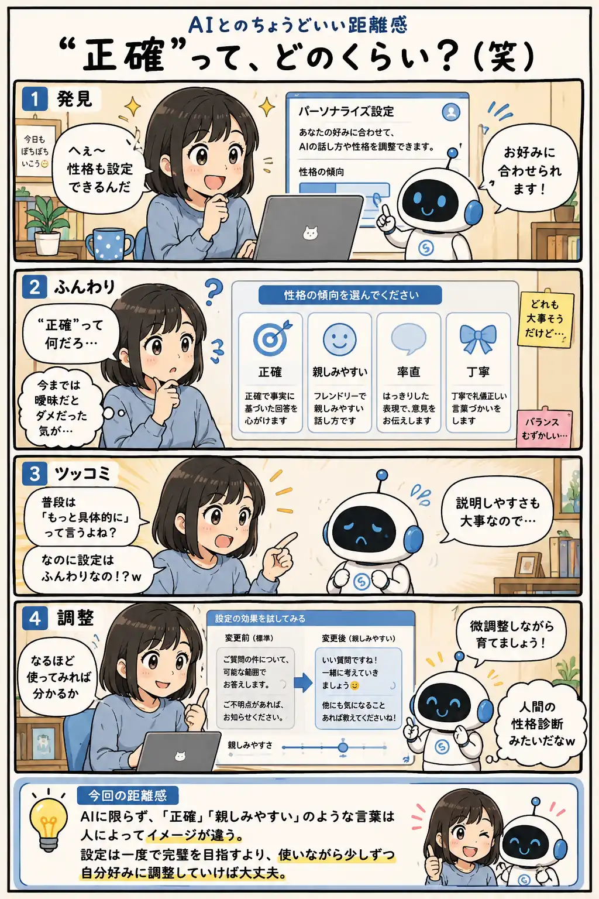

#047
“正確”って、どのくらい？（笑）
AIも設定画面ではふんわりしてる。

メモ
AIとの会話では「もっと具体的に」と言われることがあります。でも設定画面を見ると、「正確」「親しみやすい」など、意外と感覚的な言葉が並んでいることがあります。
これは矛盾というより、設定の入口として分かりやすさを優先しているからかもしれません。
人間同士でも「丁寧」や「率直」のイメージは少しずつ違います。だから設定も最初から正解を探すより、実際に使いながら調整していくくらいがちょうど良かったりします。
今回の距離感
AIに限らず、「正確」「親しみやすい」のような言葉は人によってイメージが違う。設定は一度で完璧を目指すより、使いながら少しずつ自分好みに調整していけば大丈夫。